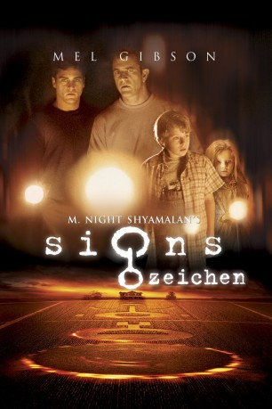

#5818 Signs - Zeichen
Alternativ: Signs
 
 IMDB-Wertung: 6.7 / 10
IMDB-Wertung: 6.7 / 10  Metascore: 0
Metascore: 0 
Graham Hess hat nach dem Tod seiner Frau den Glauben an Gott verloren. Gemeinsam mit seinen Kindern und seinem Bruder Merrill lebt er auf einer Farm, die über viele Felder verfügt. Eines Tages werden Kornkreise in einem der Felder gefunden, mysteriöse Dinge häufen sich: So greift der Hund ohne Warnung die Kinder an. Eines nachts scheinen außerdem auch Fremde auf der Farm herumzulaufen. Doch nicht nur bei Graham spielen sich unheimliche Dinge ab. Auf dem gesamten Planeten sind Kornkreise aufgetaucht und die Menschen haben das Gefühl, dass etwas in der Luft liegt. Unerklärliche Situationen häufen sich. Graham und Merrill wollen es nicht glauben, jedoch verdichten sich die Anzeichen, dass sie es wirklich mit Außerirdischen zu tun haben. Doch falls dies wahr ist, kommen die galaktischen Besucher in Frieden oder nicht?
Jahr: 2002
Dauer: 106 Minuten
FSK: 12
Land: USA Studio: Buena Vista PicturesTonspuren:
Untertitel:
Auflösung: 1080p (1920x1036) Größe: 8785 MB
Genre: Thriller, Drama, Sci-Fi, Mystery
Regisseur:  M. Night Shyamalan
M. Night Shyamalan
Drehbuch: Eleonore Adlon
Soundtrack:
Darsteller:
 Mel Gibson als Rev. Graham Hess
Mel Gibson als Rev. Graham Hess Joaquin Phoenix als Merrill Hess
Joaquin Phoenix als Merrill Hess Rory Culkin als Morgan Hess
Rory Culkin als Morgan Hess Abigail Breslin als Bo Hess
Abigail Breslin als Bo Hess Cherry Jones als Officer Paski
Cherry Jones als Officer Paski M. Night Shyamalan als Ray Reddy
M. Night Shyamalan als Ray Reddy Patricia Kalember als Colleen Hess
Patricia Kalember als Colleen Hess- Ted Sutton als SFC Cunningham
 Merritt Wever als Tracey Abernathy, the Pharmacist
Merritt Wever als Tracey Abernathy, the Pharmacist- Marion McCorry als Mrs. Nathan
- Michael Showalter als Lionel Prichard
- Clifford David als Columbia University Professor
 Ukee Washington als Off-Screen TV Anchor
Ukee Washington als Off-Screen TV Anchor- Angela Eckert als Soda Commercial Girl
- Chuck Pressler als Fireman , uncredited
 Lanny Flaherty als Mr. Nathan
Lanny Flaherty als Mr. Nathan- Kevin Pires als Brazilian Birthday Boy
- Rhonda Overby als Sarah Hughes
- Greg Wood als TV Anchor
- Paul L. Nolan als Mexico City Reporter
- Babita Hariani als Car Radio Voice
- Adam Way als Radio Eye Witness
- Jose L. Rodriguez als Radio Host
- Paul Wilson als Soda Commercial Singer
- Thomas Griffin als Soda Commercial Singer
- Samantha Steffen als Bo Stand In , uncredited
Datei: X:\2002\Signs - Zeichen (2002, FSK12, 1920x1036).mkv seit 24.03.2017
Festplatte: HD 1996-2002
 Es gibt insgesamt 93 Filme in der Gruppe '2002'
Es gibt insgesamt 93 Filme in der Gruppe '2002'